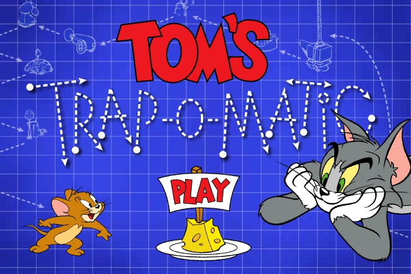
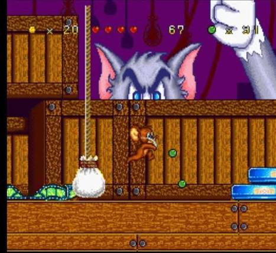

Jogos
Tom e Jerry também fizeram sucesso nos videogames, aparecendo em várias plataformas com jogos de aventura, corrida e luta. Os jogos seguem o humor clássico do desenho.

Jogos Populares
- Tom and Jerry: Fists of Furry
- War of the Whiskers
- House Trap
- Chase Game

Tipos de Jogos
Ação
Corridas e perseguições entre Tom e Jerry.
Estratégia
Jogos onde você precisa capturar ou escapar.
Diversão
Mini games leves e engraçados do desenho.